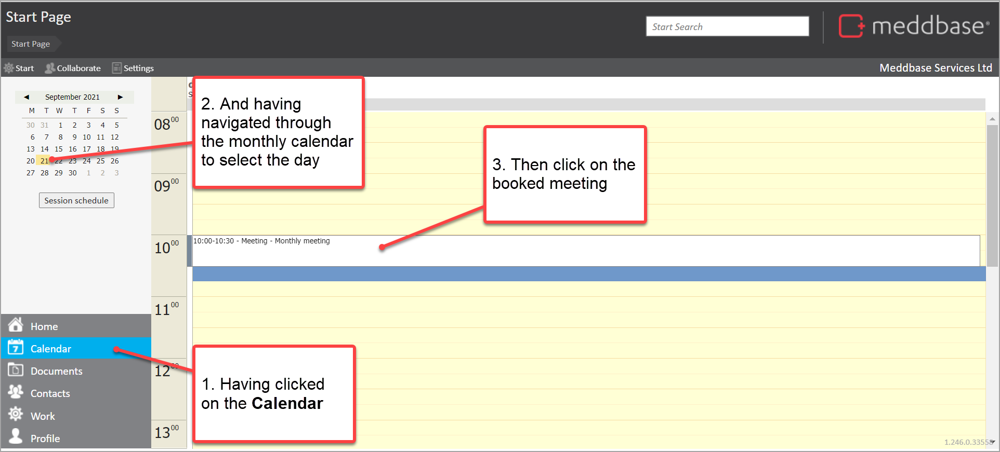
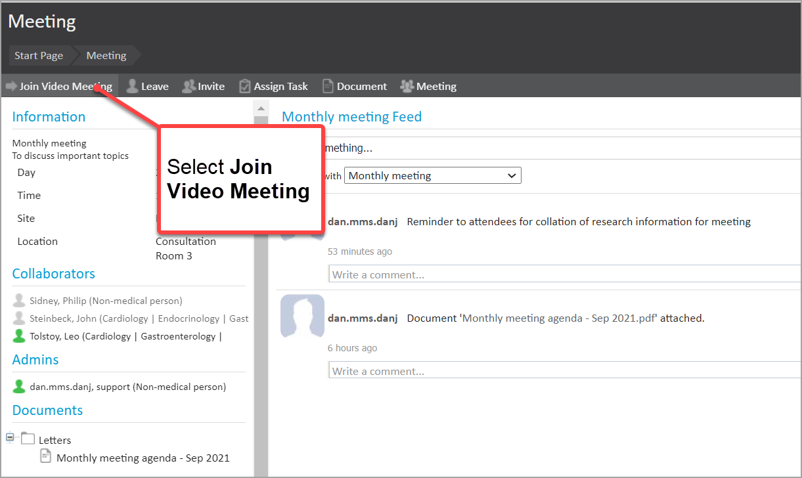
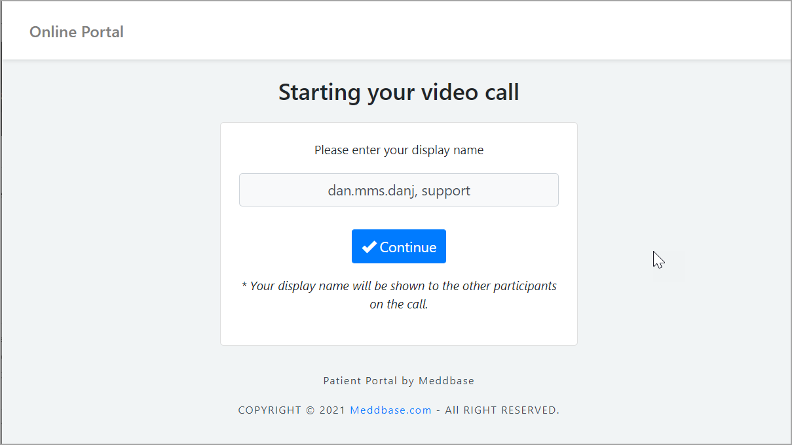
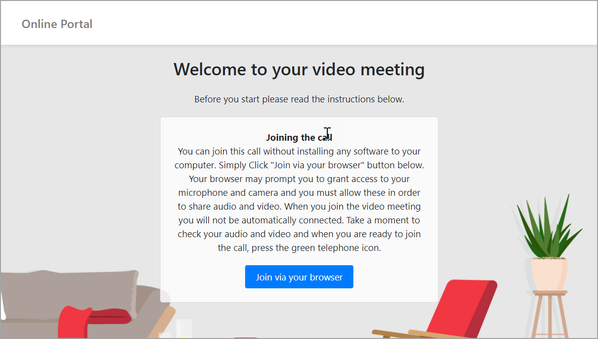
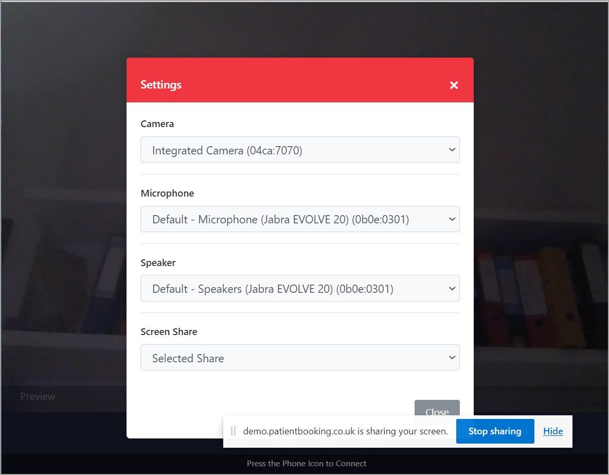
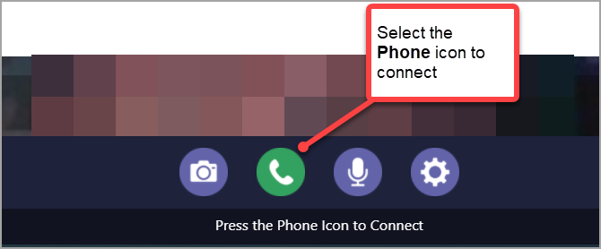
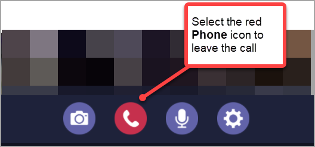
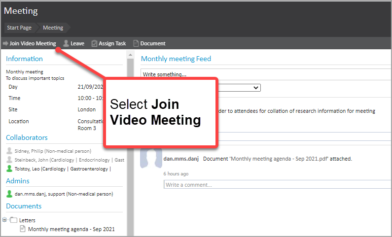
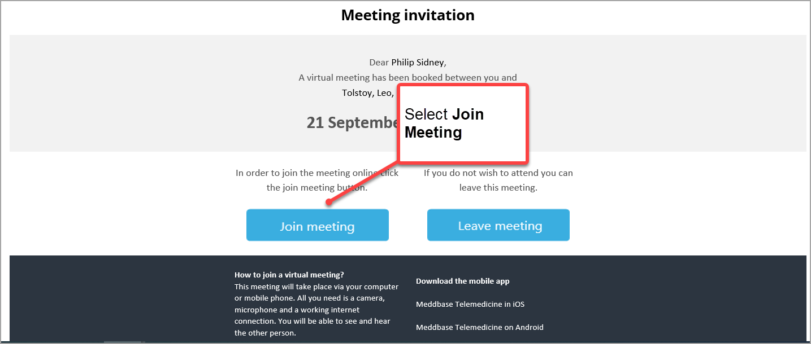

To use the online video meetings feature in Meddbase, the chamber must have Telemedicine enabled. Please contact Support to arrange this.
General pre-requisites to joining an Online Video meeting
In order to successfully join an online video call, your device will need:
An internet connection (of good quality)
A microphone
Speaker
Ideally a webcam
How to join an online video meeting
There are a few different ways to join an online video meeting. These are outlined below.
Joining an online video meeting as an Admin from Meddbase
If you are an Admin for the online meeting, you can start the meeting to enable other attendees to join it.
To do this:
From the Start page of Meddbase, go to the Calendar
In the calendar at the top left of the page, select the date for the meeting
Click on the booked meeting from the display of time slots

In the meeting displayed, select Join Video Meeting

In the new Starting your video call browser window that appears
Enter your Display name
Click on Continue

In the new Welcome to your video meeting browser window that appears
Review the joining information as required
Click on Join via your browser

In the Settings window that appears
Allow access to hardware as required (in any pop-ups that appear)
Select the appropriate Camera, Microphone, Speaker from the picklists
Where sharing screen, make a selection from the Screen Share picklist

To now connect to the meeting, click on the green Phone icon at the bottom of the screen

You are now connected to the video call. Other attendees can now join the call too.
When complete, click on the red Phone icon at the bottom of the screen

Joining an online video meeting as an attendee from Meddbase
This is essentially the same as Admin; in that the attendee navigates through the calendar to the meeting and selects Join Video Meeting.

Joining an online video meeting as an attendee via the email invitation
Where the attendee is not a Meddbase user but has been sent an invitation email, they can select the Join meeting option in the email.

From this step onwards, the process is similar to that described above.
Further useful points to note
Virtual waiting room
When joining a video call, the attendee may be directed to the virtual waiting room.
Here the attendee will be prompted as to which option they would like to connect to the call via.
Device
If an attendee is using a computer, it will prompt them to 'Join via the browser'.
However, the meeting can be joined via a tablet or phone if there is not a desktop available, this may prompt to access the call via an external application to which they will be directed.